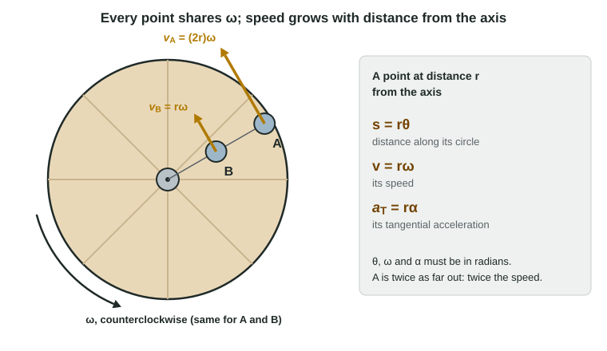

Linking Linear and Rotational Motion
A point a distance r from the axis of a turning rigid object travels s = rθ, moves at v = rω and has tangential acceleration a_T = rα, with angles in radians.
Part 1 · Hook
Why this matters
Part 2 · Before you start
What this builds on
Part 3 · Prerequisite check
Quick check before you start
1. One revolution is how many radians?
- 2π rad
- π rad
- 360 rad
- 1 rad
Show the answer
A full circle is 2π rad = 360°.
- Correct: 2π rad:
- π rad:
- 360 rad:
- 1 rad:
2. An object in uniform circular motion at speed v on radius r has centripetal acceleration
- v²/r
- v/r
- vr
- v²r
Show the answer
a_c = v²/r, toward the center.
- Correct: v²/r:
- v/r:
- vr:
- v²r:
Part 4 · See it
See it first

Part 5 · Step by step
How it works, step by step
- A point sits a distance r from the axisit moves on a circle of radius r as the object turns
- The object turns through θ (in radians)the point travels a distance s = rθ along its circle
- The object turns at ωthe point moves at speed v = rω, tangent to its circle
- ω changes at αthe point’s speed changes at a_T = rα
- A string or belt leaves the rim without slippingit moves with the rim: same distance, speed and acceleration
Part 6 · Key ideas
Key ideas
- Every point of a rigid object shares θ, ω and α; how far and how fast a point moves depends on r.
- s = rθ, v = rω, aT = rα, with angles in radians.
- A point twice as far from the axis travels twice as far and twice as fast.
- A string unwinding without slipping moves with the rim: its length, speed and acceleration are rθ, rω, rα.
- Centripetal acceleration v²/r = rω² is a different quantity from the tangential rα.
Part 7 · Misconception
A common mistake
The wrong idea: Two gears or pulleys joined by a belt turn at the same angular velocity.
What actually happens: The belt makes their rim speeds equal: r₁ω₁ = r₂ω₂. The smaller pulley turns faster.
Part 8 · Check yourself
Check yourself
Exam-style questions. Anything you miss goes into your review queue.
Diagram
A bicycle wheel on a stand
1. What is the speed of the valve while the wheel turns at 12 rad/s?
Type a number in m/s.
Show the answer
v = rω = (0.33 m)(12 rad/s) = 3.96 m/s, about 4.0 m/s. The radian drops out of the unit.
- Answer: 4.0 m/s
2. Compared with the valve, the reflector has
- the same angular velocity and a smaller speed
- the same speed and a smaller angular velocity
- a larger angular velocity and the same speed
- the same angular velocity and the same speed
Show the answer
The wheel is rigid, so both share ω = 12 rad/s. Speed is v = rω, so the reflector (0.20 m) moves at 2.4 m/s and the valve (0.33 m) at about 4.0 m/s.
- Correct: the same angular velocity and a smaller speed: Right: one ω for the whole wheel, and v = rω is smaller at smaller r.
- the same speed and a smaller angular velocity: Every point on the wheel shares ω; it is the speed that depends on r.
- a larger angular velocity and the same speed: Points closer to the axle do not turn faster; ω is shared.
- the same angular velocity and the same speed: The reflector traces a smaller circle in the same time, so it moves more slowly.
3. While the wheel slows steadily to rest, what is the size of the valve’s tangential acceleration?
Type a number in m/s^2.
Show the answer
α = Δω/Δt = 12 rad/s ÷ 6.0 s = 2.0 rad/s² in size, so a_T = rα = (0.33 m)(2.0 rad/s²) = 0.66 m/s².
- Answer: 0.66 m/s^2
4. If the wheel turned at 24 rad/s instead of 12 rad/s, the valve’s speed would be
- 2 times as large
- 4 times as large
- the same
- half as large
Show the answer
v = rω with r fixed at 0.33 m, so v ∝ ω: doubling ω doubles v (to about 7.9 m/s).
- Correct: 2 times as large: Right: v = rω, so v is proportional to ω at fixed r.
- 4 times as large: v = rω has no square; doubling ω doubles v.
- the same: The valve stays at 0.33 m, so a larger ω means a larger speed.
- half as large: A faster wheel moves the valve faster, not slower.
5. The tip of a ceiling-fan blade is 0.60 m from the axis and moves at 9.0 m/s. What is the fan’s angular velocity?
Type a number in rad/s.
Show the answer
ω = v/r = (9.0 m/s)/(0.60 m) = 15 rad/s.
- Answer: 15 rad/s
6. A belt joins a small pulley (radius 0.10 m) to a large pulley (radius 0.30 m) without slipping. The small pulley turns at 30 rad/s. How fast does the large pulley turn?
- 10 rad/s
- 90 rad/s
- 30 rad/s
- 3.3 rad/s
Show the answer
The belt moves at one speed, which equals each rim’s speed: v = (0.10 m)(30 rad/s) = 3.0 m/s. The large pulley then turns at ω = v/r = 3.0/0.30 = 10 rad/s.
- Correct: 10 rad/s: Right: the belt gives both rims the same speed, 3.0 m/s, so ω = 3.0/0.30.
- 90 rad/s: This multiplies by the ratio of radii the wrong way; the larger pulley turns more slowly.
- 30 rad/s: The pulleys are not one rigid body; the belt links their rim speeds, not their ω.
- 3.3 rad/s: This divides by 9, as if speed scaled with r². Rim speed v = rω is linear in r.
7. A turntable speeds up with constant angular acceleration. A point at distance r from the axis has tangential acceleration a. A point at distance 3r has tangential acceleration
- 3a
- 9a
- a
- a/3
Show the answer
Every point shares α, and a_T = rα, so tripling r triples the tangential acceleration.
- Correct: 3a: Right: a_T = rα with α shared, so a_T ∝ r.
- 9a: a_T = rα has no square in r.
- a: α is shared, but a_T also depends on r.
- a/3: Points farther out speed up more, not less.
Part 9 · Summary
Summary
Part 10 · Up next
What comes next
Part 11 · Connections